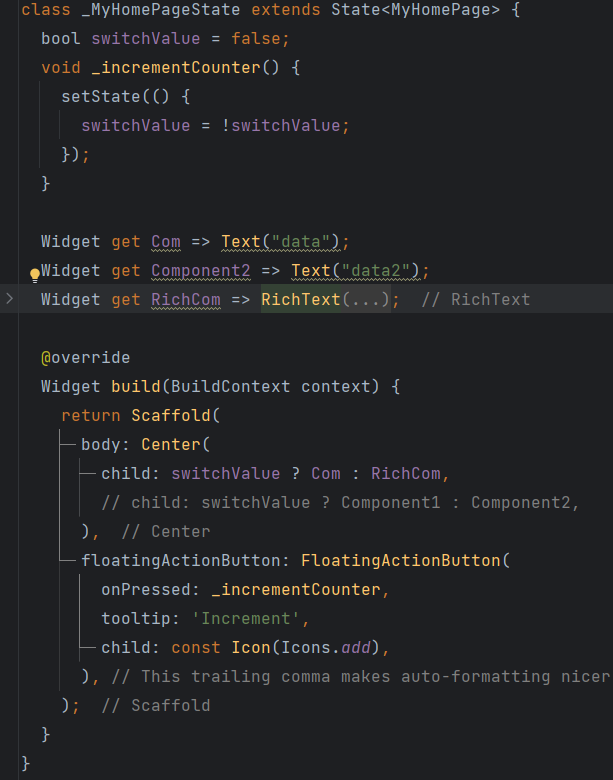
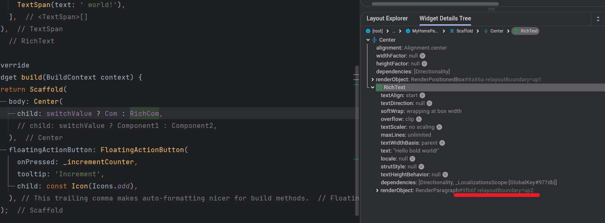
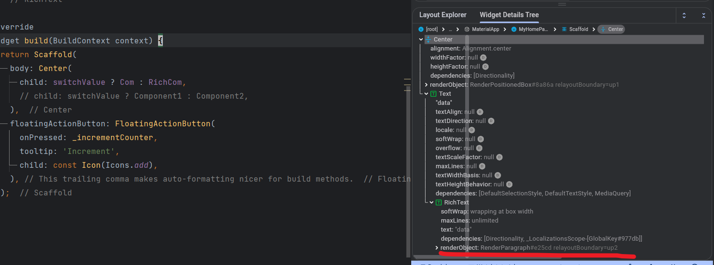

从Flutter到React,架空用户的性能宰相
“彼时彼刻，恰如此时此刻”
“竟能如此相像？” ————题记
渲染基本原理
本部分权当科普,亦欲抛砖引玉
计算机图像中的渲染需要三个部分配合CPU、GPU、显示器
其中，CPU负责图像数据计算、GPU负责图像数据渲染、显示器负责图像数据显示
CPU把计算好的、需要显示的内容交给GPU，由GPU完成渲染后放入帧缓冲区，随后视频控制器根据垂直同步信号（VSync）以每秒60次的速度，从帧缓冲区读取帧数据交由显示器完成图像显示。
CPU:任务调度、数据计算
GPU：图像渲染、着色器、抗锯齿、光栅化等
载体：包括浏览器、App等
How Flutter Work ?
这个问题可以从两个方面回答，第一个是 用什么 , 第二个是 怎么用
从 用什么 的角度，Flutter团队使用了两个工具，一个是dart，一个是skia
从 怎么用 的角度，Flutter团队使用了三棵树，分别是Widget Tree、Element Tree、RenderObject Tree
Dart and Skia
此处我们简单掠过，并不是本文的重点
1.Skia是一款用C++开发的2D图像绘制引擎，保证了同一套代码调用在多个平台上的渲染效果是完全一致的。
2.Dart是一个前端开发的强类型语言。
Flutter Render
Flutter 的三棵树
1.Widget Tree
2.Element Tree
3.RenderObject Tree
那么Widget、Element、RenderObject指的是什么呢？
Widget: 是Flutter的基本构建块，是一个不可变的配置信息
比如一个Container组件，有什么子元素？背景颜色是什么？宽高啊等等
- 在flutter中，Everything is a Widget
- A widget is immutable description of part a user interface 一个Widget是一个不可变的用户界面的描述
当然，如果你学过html，可以先把Widget理解为html中的标签，比如div、span等等，即dom
但是显然会有以下问题：既然widget不可变，那么Flutter是如何更改UI(用户界面)的呢？
这就引出了Element和RenderObject的概念
Element 是Widget的实例，是可变的，当我们当我们用一个新的Widget替换旧的Widget时，Element会更新其属性甚至新建新的Element以匹配新的Widget。
RenderObject是Element的一个实例，它也是可变的。RenderObject包含了实际的绘制操作，它描述了在屏幕上显示的内容。
简单的来说，RenderObject就是Flutter “需要绘制出的东西”
Flutter Render Steps
以如下代码为例
1 | runApp( |

在这个例子里，flutter新建了一个Text：
- 运行runApp，并把Text放到Widget树中,
- 创建一个LeafRenderObjectElement(ps1:这里是Element，不是RenderObject! ; ps2:
Leaf表示这是一个叶子节点，即没有子节点的节点) - 根据LeafRenderObjectElement的creatRenderObject创建一个RenderObject,即RenderParagraph
不过需要注意的是： Flutter不会为每个Widget都创建一个RenderObject，而是经过层层调用之后的叶子元素才会创建RenderObject
比如，
Text这个Widget内部是由RichWidget实现的，Flutter的Widget树会有Text-RichText树结构，但是并不会为Text创建一个RenderObject，而是RichText创建一个RenderObject
(此处为了方便理解，使用最常见的Text，并且暂且无视RichText)

当Flutter更新的时候，以图中为例，我们把Text展示的文字从Hello 改为Hi
Flutter将会做以下几件事：
- 创建一个新的Text Widget，并使用canUpdate方法把他和之前的Widget比较
- canUpdate传入oldWidget 和 newWidget，返回true或false，可以和react 的shouldComponentUpdate比较
- 如果不同，则替换原有的Widget
- 此时,LeafRenderObjectElement,则需要改变，会调用updateRenderObject方法
- 与创建不同的是，这里的LeafRenderObjectElement会获取已有的RenderObject并改变其状态，而非新建、替换
如果你使用flutter开发工具来查看RenderObject id，会发现并没有改变
由于不太好对比，略去相同的情况的图



可以看到，当使用RichText和Text的时候，两者切换时，RenderObjectId会改变
至于为什么使用Text时，也存在RichText的树级结构，是因为Text内部是由RichText加工得到的

由此可以验证上文,Flutter不会为每个Widget都创建一个RenderObject，而是经过层层调用之后的叶子元素才会创建RenderObject
在开始React部分之前，我们先来看一道老生常谈的八股题
事实上，虽然称之为“八股”，但我认为这道题很真的很有意义
讲一下浏览器的渲染流程 ?
从网络拿到html文件之后，开启渲染主线程进行解析，目的是解析为DOM树
同时开启一个预加载线程，这个线程主要负责css资源, 预加载线程快速浏览Link部分，通过网络线程请求css资源，之后在预加载线程进行解析并且返回给渲染在主线程。（解析、计算样式）
在遇到html中的js文件时，会停止html解析，即阻塞主线程
渲染主线程获得DOM树以及CSSOM树之后，会进行计算样式，把预设样式转化为对应的值以及相对样式转化为绝对样式。（布局）
主线程遍历合成之后的树，生成布局树。之后对布局树进行分层，这一部分是为了更改时更快。（分层）
主线程为每个层生成单独的指令集。（生成指令集）
至此主线程任务结束。
之后进行分块，会把上一步的指令集会交给合成线程，合成线程的工作会交给多个线程进行。（分块）
合成线程把信息、任务交给GPU进程，GPU开启多个线程，进行进行光栅化，并且优先处理靠近视口区域的块，即进行计算每个像素点的颜色。
（光栅化）
之后，GPU把每个层、块的光栅化结果交给合成线程，合成线程计算出每个块的位置，以及旋转、缩放等。（合成）
Ok,我们现在进入React部分
How React Renders ?
What is React ?
什么是React？
这里需要简单祛魅一下，React是一个library是一个库，不是一个framework.
如果需要类比的话，类似于lodash、tinyColor等等
但是为什么React如此如日中天，被推崇备至？
因为React的这两个核心特性：声明式API、虚拟Dom
不过，如果深入理解一下的话，你会发现声明式API和虚拟Dom是双生一体，无法分割的两个特性
声明式API
所谓的声明式API，就是告诉React你想要的是什么，而并非是如何做。
举个例子，我们现在有一个列表,列表包括两个div，一个是红色，一个是蓝色
1 |
|
现在有一个需求，需要你把Blue的div变成红色，这时候在html、js中的操作是什么呢？
1 | document.getElementById('2').style.color = 'red' |
这样的操作是命令式的，即告诉你的工具如何做
那么声明式的操作是什么?
1 | const [color, setColor] = useState('blue') |
当我们想要操作的时候，只需要改变color的值即可，React会自动帮你完成剩下的操作
当然，这个例子并没有完全显示出声明式API的优越性，但是当你的项目越来越大，你会发现声明式API的优势
虚拟Dom
所谓虚拟DOM，是一种概念
大致就是在内存中创建一个虚拟的DOM树，当数据发生变化时，React会比较新旧两颗虚拟DOM树的差异，然后只更新差异部分。
分为 diff 和 调和 两个部分
diff：找出current 虚拟dom 和 next 虚拟dom 的差异
调和：让真实dom树和current虚拟dom树保持一致
Diff Algorithm
React 的 Diff 算法主要基于两个假设：
两个不同类型的元素会产生不同的树。
开发者可以通过 key 属性来指示哪些子元素在不同的渲染下能保持稳定。
基于这两个假设，React 的 Diff 算法可以被分为两个主要部分：元素类型的比较和同一类型元素的比较。
元素类型的比较
- 当 React 对比两个元素时，首先会检查元素的类型。如果元素的类型不同，React 会直接销毁旧的树并建立新的树。例如，当一个元素从 a 变为 img，React 会销毁 a 及其子元素，然后新建 img 及其子元素。
- 同一类型元素的比较 当两个元素为同一类型时，React 会保留 DOM 节点，并仅比较和更新改变的属性。然后，React 会递归地对子元素进行相同的过程。
对于列表元素，React 无法知道列表中的元素是否有变化，因此需要开发者提供一个 key 属性来帮助 React 识别哪些元素是新的，哪些元素是旧的。这样，React 就可以只更新改变的元素，而不是重新渲染整个列表。
总的来说，React 的 Diff 算法通过智能地比较新旧虚拟 DOM 树的差异，使得只有实际改变的部分才会被更新，从而提高了性能。
- 使用了深度优先的遍历算法
- 优化策略
- 忽略了跨层级的节点的比较
- 通过 key 来判断是否是同一个节点
为什么使用深度优先？

假设有以上dom树，两层，每个非叶子节点都有n个子节点
对于n1点，
广度优先：遍历n+1个节点
深度优先：遍历2个节点
对于n2点，
广度优先：遍历2n个节点
深度优先：遍历1+n个节点
对于n3点，
广度优先：遍历n+n×n个节点
深度优先：遍历n+n×n个节点
可见对于叶子节点的改变的比较，深度优先效率要远远大于广度优先
不仅如此，由于：
一段时间内大部分的改变都会很集中
所以，深度优先更加适合React的Diff算法
Fiber 架构
Fiber是虚拟Dom的一种实现方式
在React 16之前，React使用的是Stack Reconciler，即栈调和器，这种调和器是递归的，当递归深度过深时，会导致浏览器卡死
Fiber架构是React 16中引入的一种新的协调引擎，它的目的是为了更好地处理虚拟DOM的更新，使其更具有灵活性和效率。
存在内存里的虚拟Dom，需要一种保存格式，Fiber的格式是javascript对象
1 | { |
Fiber：一个带有列表关系的DOM树
Fiber工作特性
- 单元工作：每个Fiber节点代表一个单元，所有Fiber节点共同组成一个Fiber链表
- 连接属性：slibing 兄弟、child 子节点、return 父节点
- React在更新时，会根据现有的Fiber树（Current Tree）创建一个新的临时树（Work-in-progress (WIP) Tree）,WIP-Tree包含了当前更新受影响的最高节点直至其所有子孙节点。
因为React在更新时总是维护了两个Fiber树，所以可以随时进行比较、中断或恢复等操作，而且这种机制让React能够同时具备拥有优秀的渲染性能和UI的稳定性。

current 与 workinprogress：

react不会改变current tree，而是在workInProgress tree上进行操作，当workInProgress tree完成后，react会将其替换为current tree
这里的替换是指针上的替换，即current tree的指针指向workInProgress tree，
这样只需要创建两个Fiber树，就可以重复利用，节省了内存
Fiber如何实现优先级?
React Fiber的调度器是一个优先级调度器，它可以中断任务，然后根据优先级重新安排任务的执行顺序。这样可以保证高优先级任务的优先执行，从而提高用户体验。
- requestIdleCallback
- 安排低优先级任务
- requestAnimationFrame
- 安排高优先级任务
Fiber工作流程
Fiber工作整体分为两个部分
- Render
- Commit
其中，Render部分是异步的，在渲染的过程中可以执行一些网络请求
Commit部分是同步的，用于执行副作用
副作用：对于Dom的操作以及特定的生命周期的方法
Render阶段:
- 创建与标记更新节点
- 收集副作用列表
在对节点进行遍历时，Fiber采用的是While 循环 而非 递归 的方式
Commit阶段
- 遍历 Effects 列表并为每个Effect 找到对应的组件实例
- 正式提交执行副作用
因为Effect 会导致用户可见的界面的改变，所以必须是同步的
回归主题：性能

我们需要明确一个原则：对于视图的改变代价都是高昂的:
在上文 浏览器渲染流程 中我们可以看到，从拿到数据到渲染到屏幕上，需要经过多个步骤，而每个步骤都会消耗时间
Reflow（重排）：当 DOM 的变化影响到元素的几何属性（例如宽度、高度、位置等）时，浏览器需要重新计算元素的几何属性，然后重新渲染页面。这个过程被称为 Reflow。Reflow 主要发生在“计算样式，把预设样式转化为对应的值以及相对样式转化为绝对样式”这个步骤之后，即在“布局”阶段。
Repaint（重绘）：当 DOM 的变化只影响到元素的外观，但并不影响布局时，浏览器只需要重新绘制这些元素。这个过程被称为 Repaint。Repaint 主要发生在“主线程为每个层生成单独的指令集”这个步骤之后，即在“生成指令集”阶段。
DOM的改变的代价要远远大于其样式的改变的代价
所以flutter 和react 都“架空”了用户，给让用户操作“自己的dom”
在Flutter中，用户通过widget来实现自己想做的事，在React中，指的是React Component
用户操作之后，Flutter和React，都会生成对应的“虚拟DOM”
在Flutter 中，可以简单的理解为Element，而在React中，指的是虚拟DOM（Fiber）
并且，在这个过程中进行优化
如果Widget可以复用，那么则复用，避免了所有更改。如果不可以，则查看是否可以更新，如果可以更新，则更新，避免了新建的高昂代价。如果不可以，则新建。
虚拟DOM（Fiber）也是一样
之前一直在看性能优化的博客，现在才发现是舍本逐末
事实上，当我们了解了这些原理之后，性能便手到擒来了
以这篇文章的一些点举两个简单的例子：
- 因为深度优先的遍历策略，我们尽可能减少dom的嵌套，实现扁平化DOM树
- 因为React的Diff算法，我们可以使用key来帮助React识别哪些元素是新的，哪些元素是旧的，从而提高性能